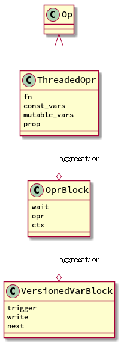
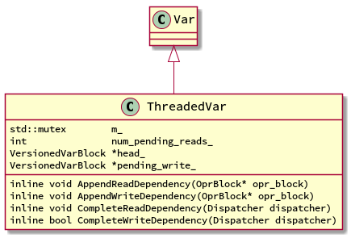
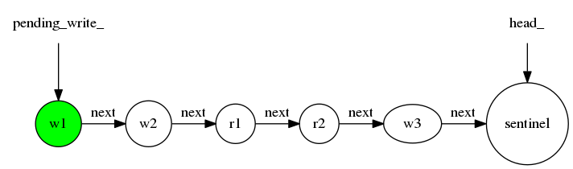
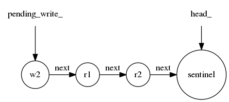

MXNET Dependency Engine
基本背景知识
MXNET中有一个依赖引擎，这个引擎是用来分析计算过程的依赖关系，把不依赖的计算并行 化，以达到提高性能的目的。它的基本原理可以看官方的文档。 简单的说就是给每一个对 象打上一个tag，这个tag叫做Var，每一个计算(op)都会依赖一个或者多个Var，依赖有两种 类型：写依赖和读依赖。依赖引擎为每一个Var都维护一个队列，然后根据op的依赖关系向 队列中添加ReadDependency和WriteDependency，当各个依赖完成后要更新队列的状态。
Op
Op实际上是用来代表计算过程以及它依赖的var，先来看看它的uml类图。

Var
var可以看做是一个tag，用来标示每一个对象的，这样Op对对象的依赖可以简化成对var的 依赖，这样就可以构建出一个不依赖于具体的对象的通用的依赖引擎。Var是依赖引擎的关键。
类图

Var只是一个基类，用来统一类型系统的，主要的工作在ThreadedVar中，每一个对象都会有
一个由VersionedVarBlock所组成的链表，这个链表就是一个FIFO队列。 head_ 指向的是
队列的尾部, 实际是一个哨兵(空对象)， head_ 这个命名有误导性, pending_write_
指向的是最"老"的写依赖，如果没有写依赖，那么就指向 nullptr, 根据依赖引擎的特点，
它实际上指向的是队列的头部， ThreadedVar的那四个方法就是来操作这个队列的。
理解Var的队列


添加读依赖
代码主要在 src/engine/Threaded_engine.cc 的 AppendReadDependency 中。
inline void ThreadedVar::AppendReadDependency(OprBlock* opr_block) { std::lock_guard<std::mutex> lock{m_}; if (pending_write_ == nullptr) { // invariant: is_ready_to_read() CHECK_GE(num_pending_reads_, 0); // STATE CHANGE ++num_pending_reads_; // decrease wait counter opr_block->decr_wait(); } else { auto&& new_var_block = VersionedVarBlock::New(); assert(head_->next == nullptr); assert(head_->trigger == nullptr); assert(head_->write == false); // append things to next. head_->next = new_var_block; head_->trigger = opr_block; head_ = new_var_block; } }
代码的基本思路是这样的：检查队列中有没有写依赖，这分两种情况：
- 如果没有写依赖，那么意味着，目前该Var没有依赖在执行，或者说只有读依赖在执行，
所以这个新的读依赖可以直接执行，那么它没有必要添加到队列中，只需要更新
num_pending_reads_就好，当然因为该op可能还依赖别的var，所以你只能调用decr_wait，只有当wait减为0的时候，才能开始运行。这部分代码在engine的push中。 - 如果有写依赖，那么读依赖必须在写依赖的后面执行，所以需要把读依赖添加到队列的
尾部。记住
head_永远指向一个空的哨兵对象。
添加写依赖
代码主要在 src/engine/Threaded_engine.cc 的 AppendWriteDependency 中。
inline void ThreadedVar::AppendWriteDependency(OprBlock* opr_block) { auto&& new_var_block = VersionedVarBlock::New(); std::lock_guard<std::mutex> lock{m_}; // invariant. assert(head_->next == nullptr); assert(head_->trigger == nullptr); assert(head_->write == false); // attach to head. head_->next = new_var_block; head_->trigger = opr_block; head_->write = true; // check if it is ready to write if (pending_write_ == nullptr) { // invariant: is_ready_to_read() pending_write_ = head_; CHECK_GE(num_pending_reads_, 0); if (num_pending_reads_ == 0) { // STATE CHANGE opr_block->decr_wait(); num_pending_reads_ = kWriteTriggered; } } else { CHECK_NE(num_pending_reads_, 0); } head_ = new_var_block; }
代码的基本思路是这样的： 将该Op放入队列的尾部，接着检查该Op的依赖有没有就绪，这 要检查Var有没有写依赖(pending_read_==nullptr)和读依赖(num_pending_read_==0)的Op 正在执行，只有二者都没有时，才能开始运行，当然你依然要检查该Op对其他的Var的依赖 有没有就绪。需要注意的一点是，即便Op的Var写依赖就绪，该Op也不会从队列中移除，只 有该Op执行完成后才会被移除，这在CompleteWriteDependency中实现。
读依赖完成
代码主要在 src/engine/Threaded_engine.cc 的 CompleteReadDependency 中。
template <typename Dispatcher> inline void ThreadedVar::CompleteReadDependency(Dispatcher dispatcher) { OprBlock *trigger = nullptr; { // this is lock scope std::lock_guard<std::mutex> lock{m_}; CHECK_GT(num_pending_reads_, 0); if (--num_pending_reads_ == 0) { if (pending_write_ != nullptr) { // STATE CHANGE trigger = pending_write_->trigger; num_pending_reads_ = kWriteTriggered; } } } if (trigger != nullptr && trigger->decr_wait() == 0) { dispatcher(trigger); } }
写依赖完成
代码主要在 src/engine/Threaded_engine.cc 的 CompleteWriteDependency 中。
template <typename Dispatcher> inline bool ThreadedVar::CompleteWriteDependency(Dispatcher dispatcher) { // this is lock scope VersionedVarBlock *old_pending_write, *end_of_read_chain; OprBlock* trigger_write = nullptr; { std::lock_guard<std::mutex> lock{m_}; // invariants assert(head_->next == nullptr); assert(pending_write_ != nullptr); CHECK_EQ(num_pending_reads_, kWriteTriggered); // really delete if (to_delete_) { VersionedVarBlock *head = pending_write_->next; VersionedVarBlock::Delete(pending_write_); assert(head_ == head); VersionedVarBlock::Delete(head); return true; } // detach pending write old_pending_write = pending_write_; // search for chains to trigger end_of_read_chain = old_pending_write->next; // reset to 0 pending reads num_pending_reads_ = 0; while (end_of_read_chain != head_ && end_of_read_chain->write == false) { ++num_pending_reads_; end_of_read_chain = end_of_read_chain->next; } if (end_of_read_chain == head_) { pending_write_ = nullptr; } else { // check if there is pending reads, if not trigger write assert(end_of_read_chain->write == true); pending_write_ = end_of_read_chain; if (num_pending_reads_ == 0) { // mark write as already actived in this var num_pending_reads_ = kWriteTriggered; trigger_write = end_of_read_chain->trigger; } } } // This is outside of lock scope // Be very carful, pending_write_ and num_pending_reads_ // can change now, do not reply ont the two variables. // The linked list \in [old_pending_write, end_of_read_chain) // is already detached from this Var. // So it is safe to modify these VersionedVarBlock *cur_head = old_pending_write->next; VersionedVarBlock::Delete(old_pending_write); // dispatch all the events while (cur_head != end_of_read_chain) { if (cur_head->trigger->decr_wait() == 0) { dispatcher(cur_head->trigger); } auto prev = cur_head; cur_head = cur_head->next; assert(cur_head != nullptr); VersionedVarBlock::Delete(prev); } if (trigger_write != nullptr && trigger_write->decr_wait() == 0) { dispatcher(trigger_write); } return false; }